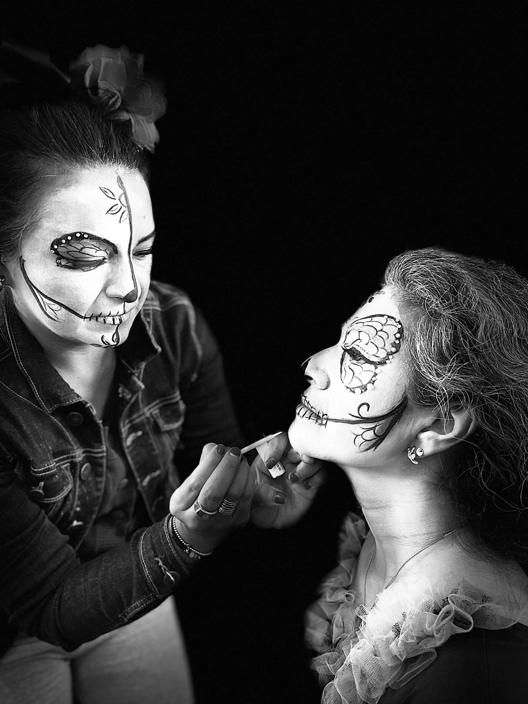
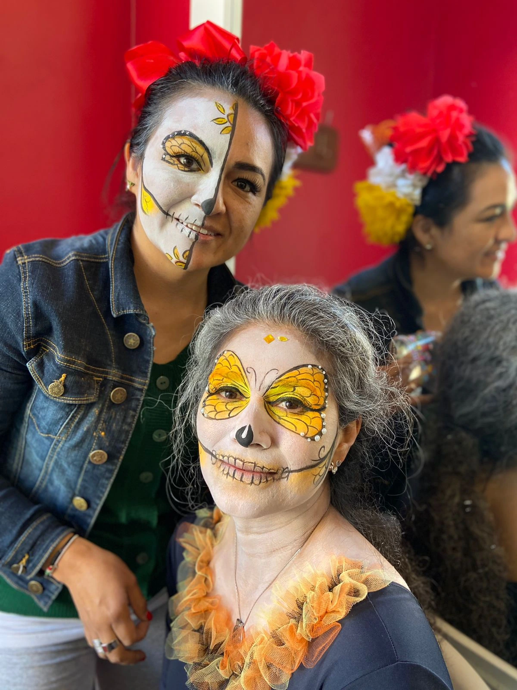
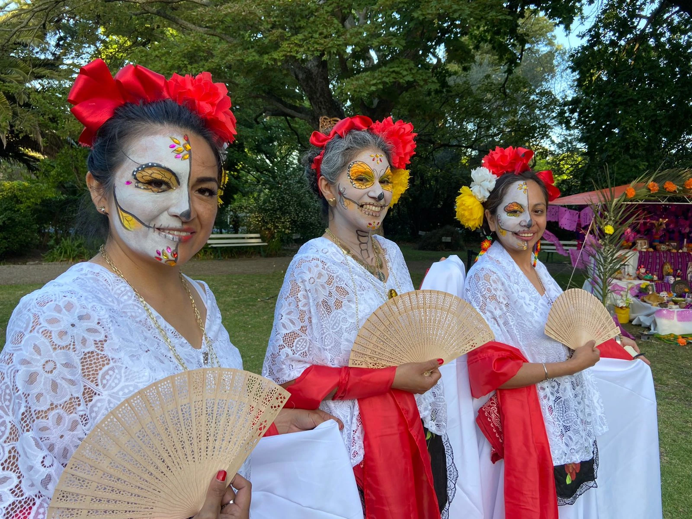
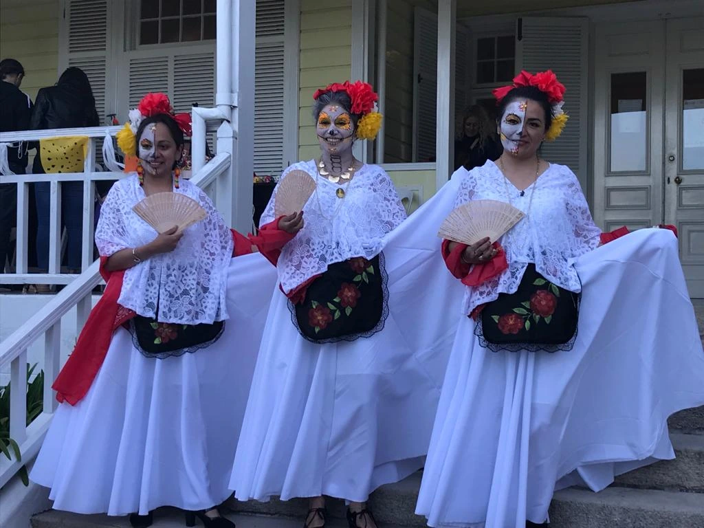
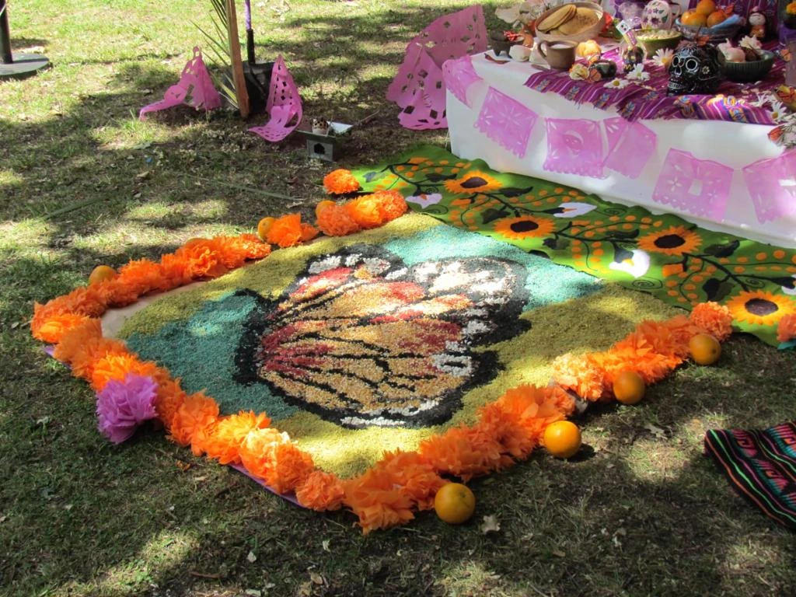
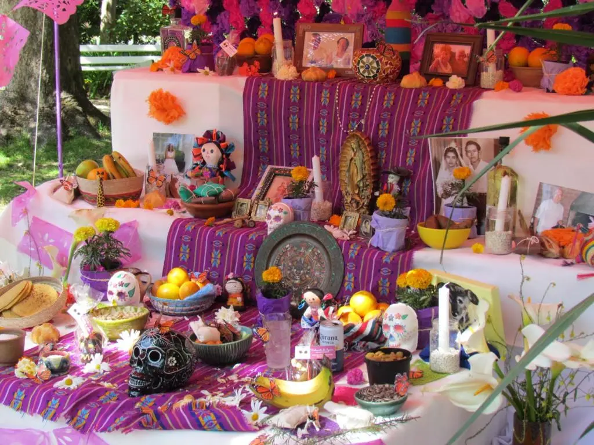
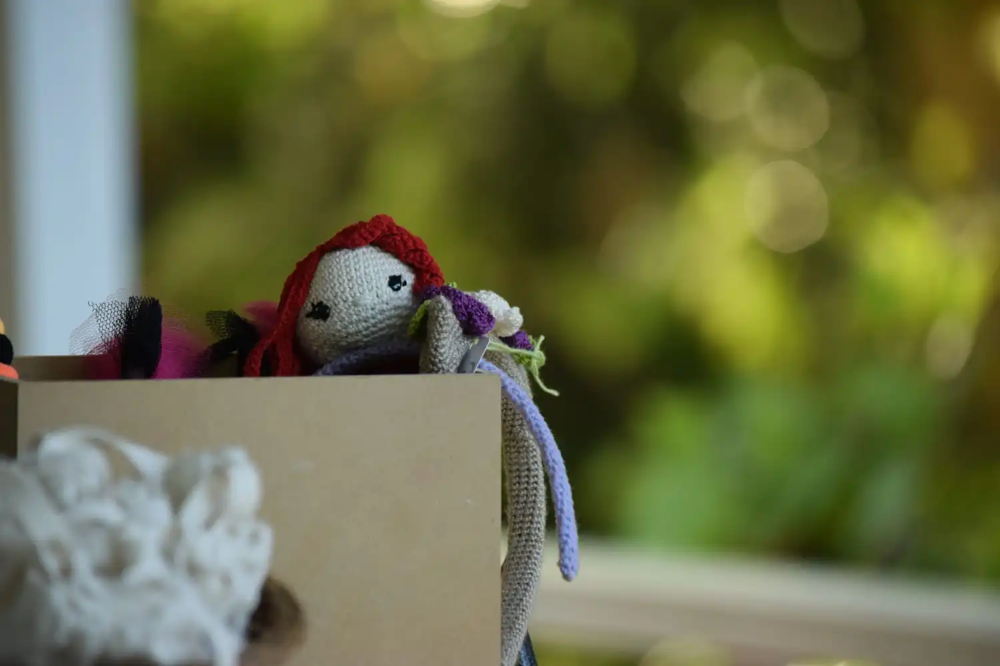
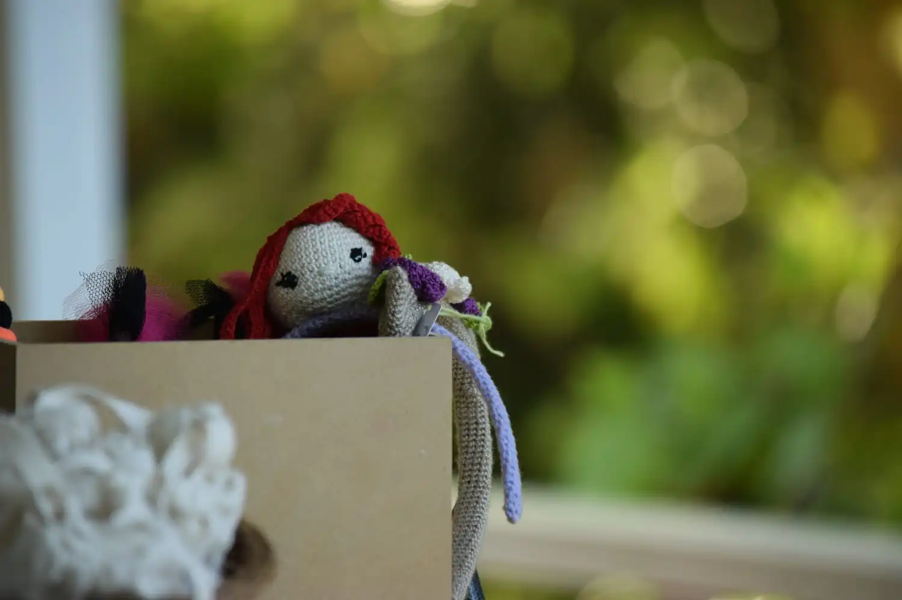

PREPARACION DE LA CATRINA
 La Catrina, figura icónica del Día de Muertos, es la protagonista indiscutible de esta festividad en México. Vestida con elegancia y sofisticación, su esquelético rostro sonríe con ironía ante la muerte. Esta representación de la muerte con humor y estilo se ha convertido en un símbolo de la cultura mexicana. La Catrina principal es la anfitriona del altar del Día de Muertos, presidiendo la celebración con majestuosidad. Su presencia evoca el recordatorio de que la muerte es parte natural de la vida y que, al honrar a los difuntos, se celebra la existencia misma. Así, la Catrina principal encarna la esencia de la celebración del Día de Muertos: una mezcla de alegría y tristeza, una fiesta que abraza a la muerte con respeto y gratitud, y que nos recuerda la importancia de mantener viva la memoria de quienes ya no están físicamente, pero permanecen en nuestros corazones.
LAS BAILARINAS
En la celebración del Día de Muertos en Mar del Plata, el grupo de danza Maiz y Alebrijes cautivó a todos con su actuación. Originarias de México y ahora residentes en la ciudad, estas talentosas mujeres llevaron consigo la esencia y tradiciones de su tierra natal. Con trajes coloridos y movimientos elegantes, recrearon la danza de las catrinas, evocando la elegancia y solemnidad de esta icónica figura. También interpretaron bailes folklóricos tradicionales, transmitiendo la riqueza cultural de México. El grupo de danza mexicana en Mar del Plata se ha convertido en una parte esencial de la celebración del Día de Muertos, brindando a la comunidad una experiencia auténtica y emocionante que celebra la vida y honra la memoria de los seres queridos fallecidos.
 TODOS LOS PERSONAJES DEL DIA DE MUERTOS
En el Día de Muertos, algunos personajes emblemáticos cobran vida para honrar la tradición. La Catrina, elegante y esquelética, personifica la muerte con humor y elegancia. El calavera, una calavera de azúcar con adornos coloridos, simboliza la vida efímera. El papel picado, delicado y festivo, representa el vínculo entre los vivos y los muertos. Además, el mariachi, con su música emotiva, guía a las almas hacia el altar. Todos estos personajes se unen en una danza mágica y colorida para rendir homenaje a los seres queridos fallecidos y celebrar la eternidad de la vida. CONOCÉ NUESTRA COMUNDIAD EN MAR DEL PLATA AQUÍ
EL ALTAR DE DIA DE MUERTOS
  

Las fotos del altar de Día de Muertos capturan la esencia de esta festividad llena de significado. Con coloridas flores de cempasúchil, velas brillantes y calaveritas de azúcar, el altar se convierte en un lugar sagrado para recordar a los seres queridos fallecidos. Cada fotografía representa una conexión emocional, mientras los rostros sonrientes de aquellos que ya no están físicamente, pero siguen vivos en el corazón, llenan el espacio con amor y nostalgia. Es un tributo conmovedor que trasciende el tiempo y mantiene viva la memoria de quienes han partido. CONOCÉ SOBRE LA ARTISTA DETRÁS DE TODO EL DISEÑO AQUÍ